Network Comparison and Visualization
Source:vignettes/articles/comparison-plots-demo.Rmd
comparison-plots-demo.RmdOverview
This vignette demonstrates network comparison and visualization functions:
-
plot_compare()- Plotting difference networks (x - y) -
plot_permutation()- Plotting statistical comparison between networks computed through permutation testing -
plot_heatmap()- Adjacency matrix heatmaps - Advanced node shapes with donut + pie combinations
1. Basic Network Comparison
1.1 Simple Difference Plot
# Create two networks
m1 <- matrix(runif(64, 0, 0.4), 8, 8)
m2 <- matrix(runif(64, 0, 0.4), 8, 8)
rownames(m1) <- colnames(m1) <- LETTERS[1:8]
rownames(m2) <- colnames(m2) <- LETTERS[1:8]
plot_compare(m1, m2,
layout = "oval",
node_size = 8,
title = "Network Difference (m1 - m2)")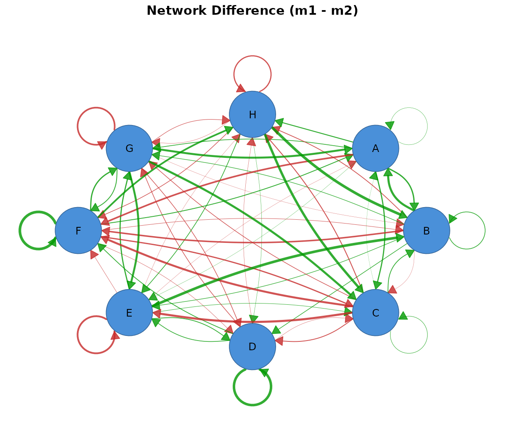
1.2 With Initial Probability Differences
inits1 <- c(0.20, 0.18, 0.15, 0.12, 0.10, 0.10, 0.08, 0.07)
inits2 <- c(0.10, 0.22, 0.18, 0.15, 0.12, 0.08, 0.08, 0.07)
plot_compare(m1, m2,
inits_x = inits1,
inits_y = inits2,
layout = "oval",
node_size = 8,
title = "With Initial Probability Donuts")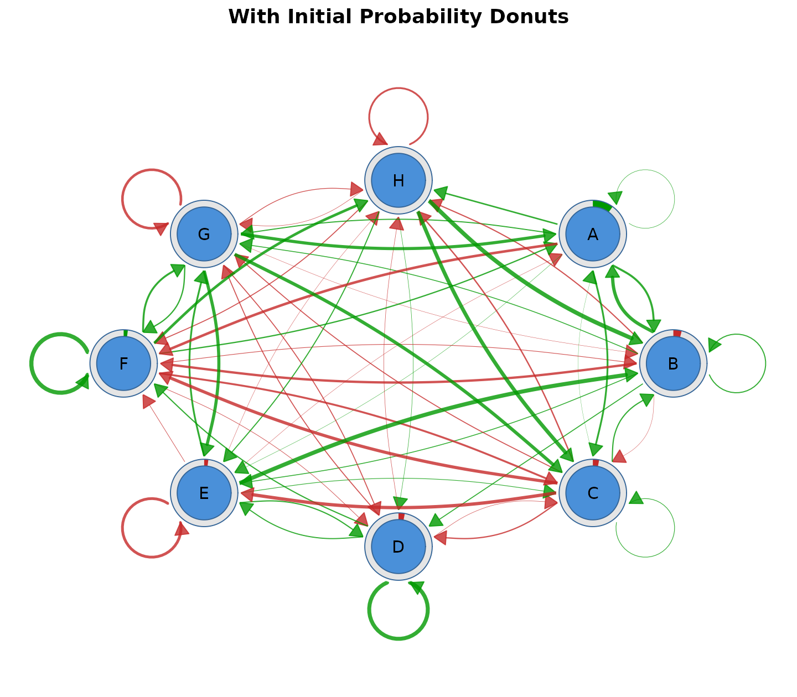
1.3 TNA Model Comparison
model_x <- tna(group_regulation[1:200, ])
model_y <- tna(group_regulation[201:400, ])
plot_compare(model_x, model_y,
layout = "oval",
node_size = 8,
title = "TNA Model Comparison")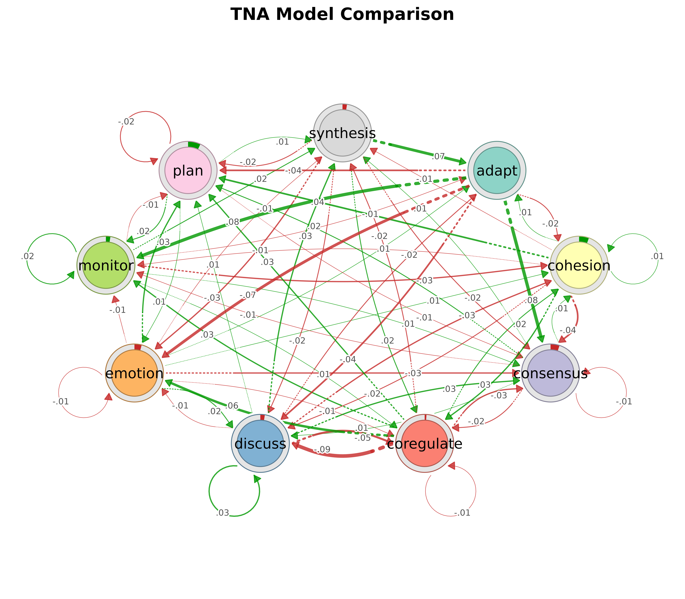
## 1.4 TNA Permutation testing
permutation_results <- permutation_test(model_x, model_y)
plot_permutation(permutation_results,
layout = "oval",
node_size = 8,
title = "TNA Permutation test results")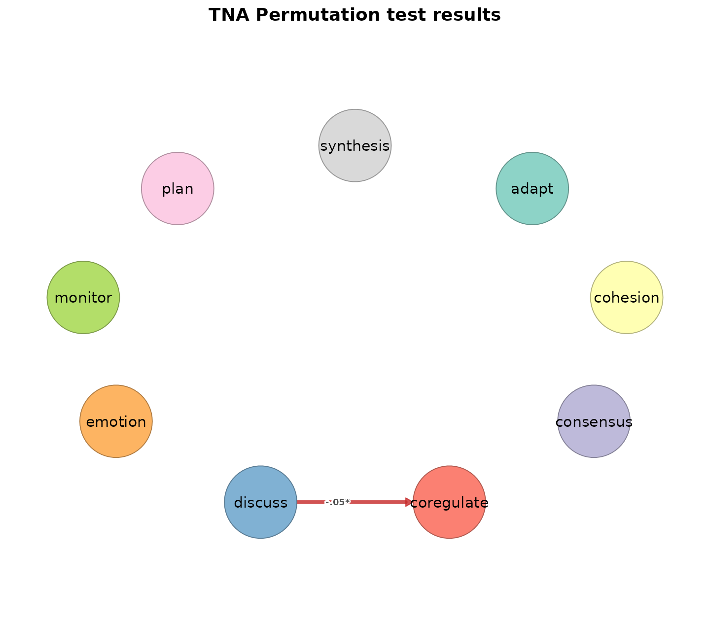
## 1.5 Group TNA (All Pairs)
group_model <- group_model(group_regulation, group = c(rep("H",1000),rep("L",1000)))
plot_compare(group_model, node_size = 7)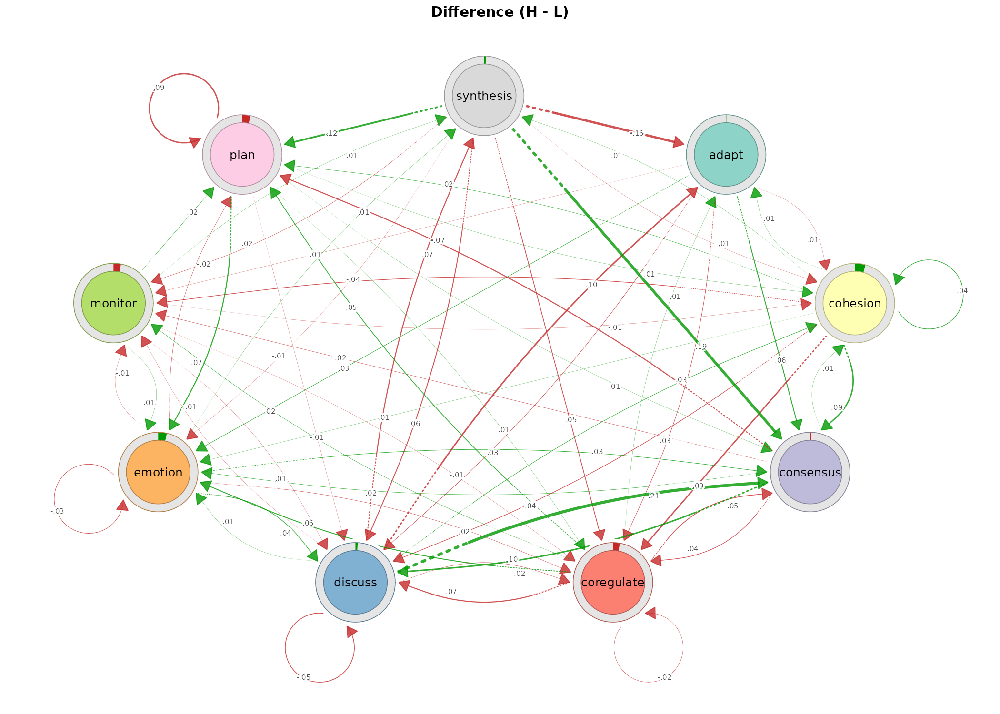
2. Edge Styling
Different edge styles for directed networks.
2.1 Edge Curve and Direction
mat <- matrix(c(
0.0, 0.6, 0.3, 0.0, 0.2,
0.4, 0.0, 0.5, 0.3, 0.0,
0.0, 0.2, 0.0, 0.6, 0.4,
0.5, 0.0, 0.3, 0.0, 0.5,
0.3, 0.4, 0.0, 0.2, 0.0
), 5, 5, byrow = TRUE)
rownames(mat) <- colnames(mat) <- c("A", "B", "C", "D", "E")
par(mfrow = c(1, 2), mar = c(2, 2, 3, 1))
splot(mat, layout = "oval", node_size = 8, directed = TRUE,
title = "Straight Edges")
splot(mat, layout = "oval", node_size = 8, directed = TRUE,
curvature = 0.25, title = "Curved Edges")
2.2 Arrow Size Variations
par(mfrow = c(1, 2), mar = c(2, 2, 3, 1))
splot(mat, layout = "oval", node_size = 8, directed = TRUE,
arrow_size = 0.6, title = "Small Arrows")
splot(mat, layout = "oval", node_size = 8, directed = TRUE,
arrow_size = 1.5, title = "Large Arrows")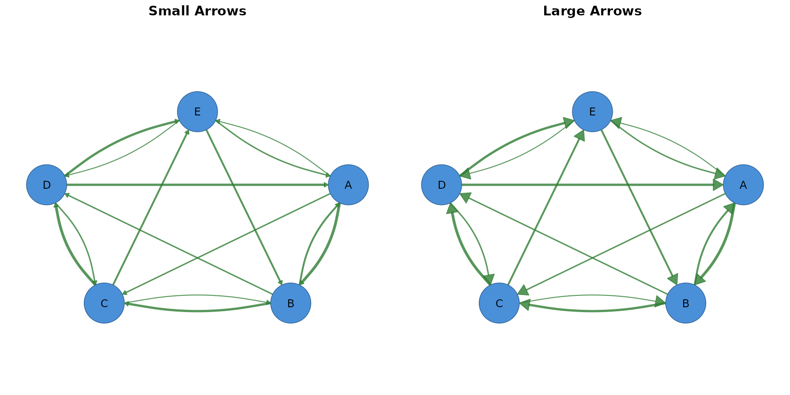
2.3 Edge Width
splot(mat,
layout = "oval",
node_size = 8,
directed = TRUE,
edge_width = 2,
curvature = 0.2,
title = "Thicker Edges with Curve")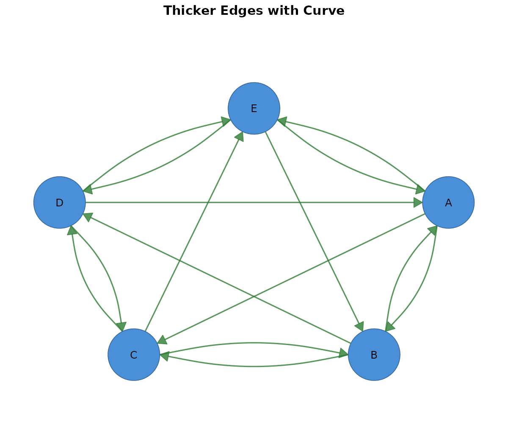
3. Polygon Shapes with Donut + Pie
Combine different node shapes with donut fills and pie charts.
3.1 Mixed Shapes with Donut Fill
mat10 <- matrix(runif(100, 0, 0.3), 10, 10)
diag(mat10) <- 0
rownames(mat10) <- colnames(mat10) <- LETTERS[1:10]
splot(mat10,
layout = "oval",
node_size = 8,
node_shape = c("circle", "hexagon", "square", "diamond", "triangle",
"pentagon", "circle", "hexagon", "square", "diamond"),
donut_fill = runif(10, 0.3, 1),
donut_color = "steelblue",
title = "Mixed Shapes with Donut Fill")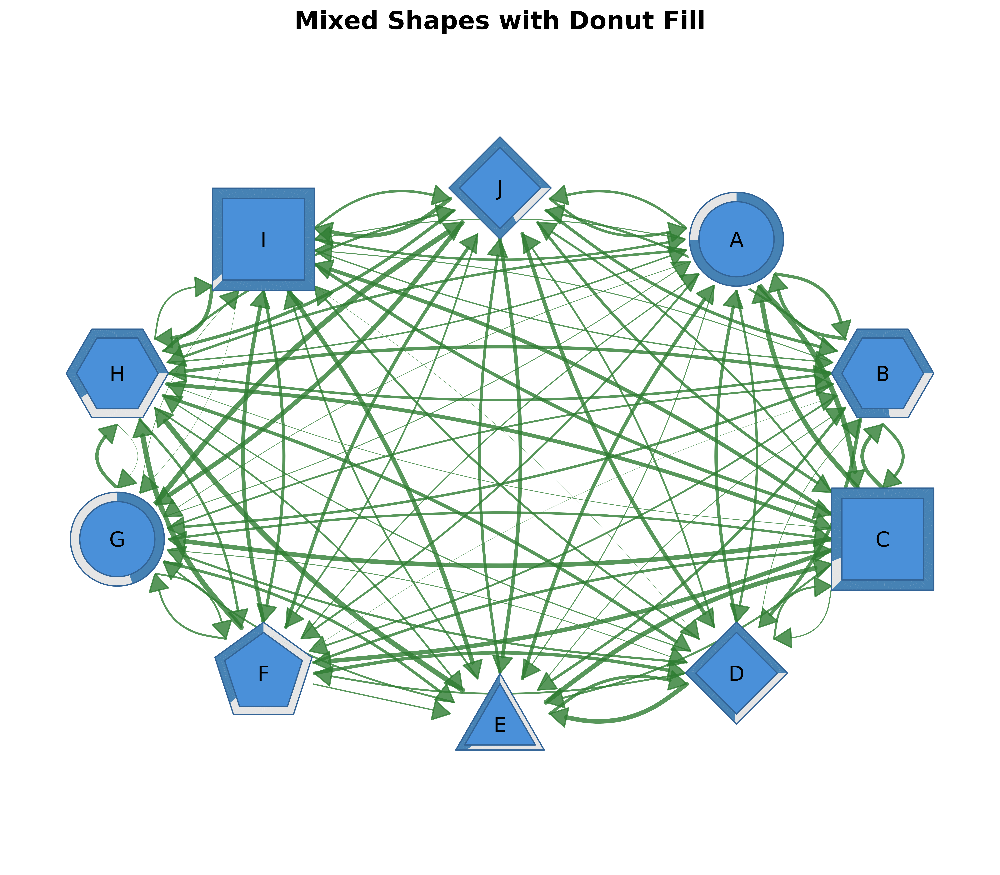
3.2 Shapes with Pie Charts
splot(mat10,
layout = "oval",
node_size = 8,
node_shape = c("hexagon", "square", "diamond", "pentagon", "triangle",
"hexagon", "square", "diamond", "pentagon", "triangle"),
pie_values = lapply(1:10, function(i) c(0.5, 0.3, 0.2)),
pie_colors = c("#E8E8E8", "#A0A0A0", "#505050"),
title = "Polygon Shapes with Pie Charts")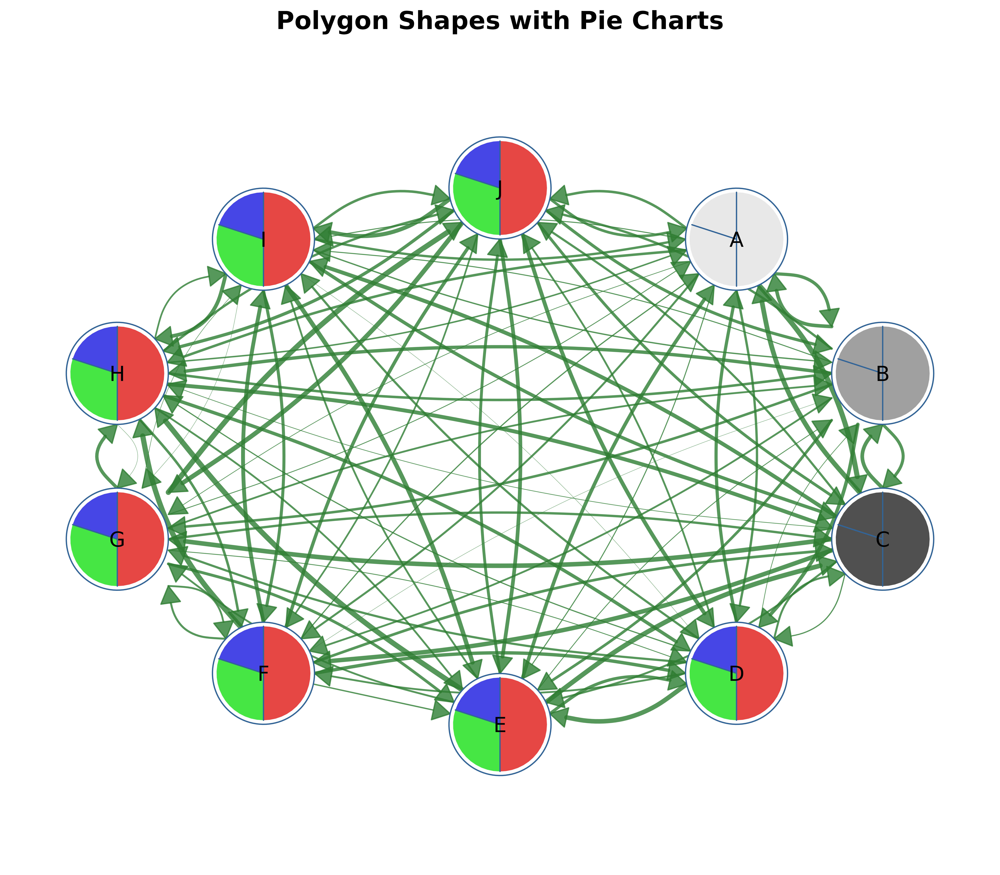
3.3 Donut + Pie Combined
splot(mat10,
layout = "oval",
node_size = 8,
node_shape = c("circle", "hexagon", "square", "diamond", "triangle",
"pentagon", "circle", "hexagon", "square", "diamond"),
donut_fill = runif(10, 0.4, 0.9),
donut_color = "gray40",
pie_values = lapply(1:10, function(i) runif(3)),
pie_colors = c("#D4D4D4", "#909090", "#4A4A4A"),
title = "Mixed Shapes: Donut Ring + Pie Center")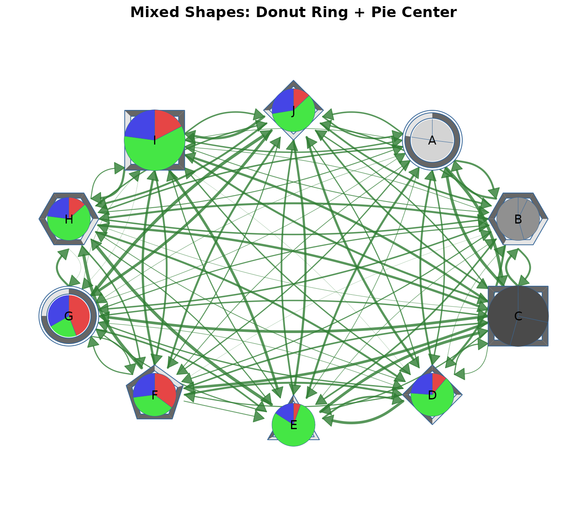
4. Heatmaps
4.2 Comparison Heatmaps
plot_heatmap(m1, title = "Network 1", colors = "blues")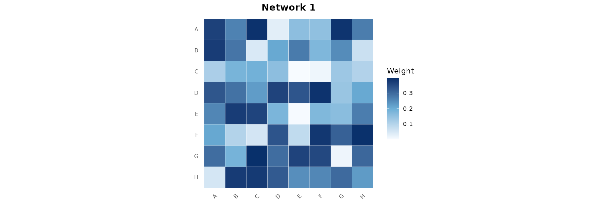
plot_heatmap(m2, title = "Network 2", colors = "blues")
plot_comparison_heatmap(m1, m2, type = "difference")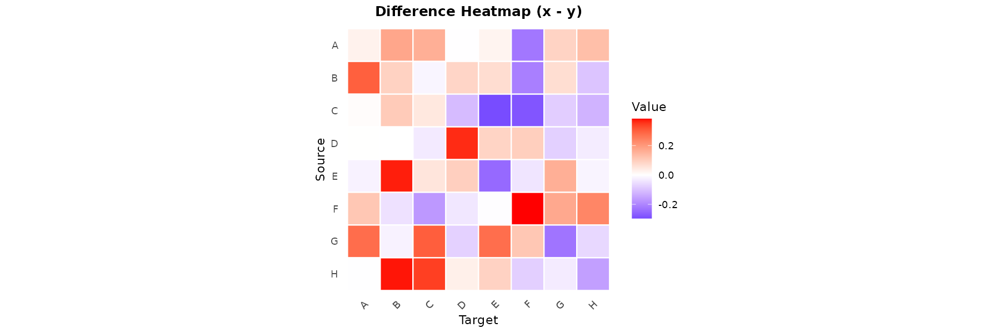
4.3 Group TNA Supra-Adjacency
plot_heatmap(group_model,
colors = "viridis",
title = "Supra-Adjacency Matrix")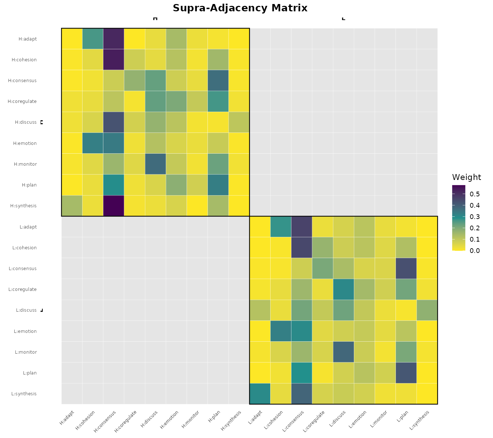
5. Sophisticated Example: Network with Confidence Intervals
A complete example showing transition probabilities with confidence intervals. Donut fill shows estimate precision (1 - CI width), pie shows initial probability.
# Simulated transition matrix with confidence intervals
states <- c("Bored", "Confused", "Engaged", "Frustrated", "Flow")
n <- length(states)
# Point estimates (transition probabilities)
estimates <- matrix(c(
0.00, 0.25, 0.15, 0.35, 0.05,
0.20, 0.00, 0.30, 0.25, 0.10,
0.10, 0.15, 0.00, 0.10, 0.45,
0.30, 0.20, 0.15, 0.00, 0.05,
0.05, 0.10, 0.40, 0.05, 0.00
), n, n, byrow = TRUE)
rownames(estimates) <- colnames(estimates) <- states
# Initial state probabilities with CI
init_estimates <- c(0.15, 0.20, 0.35, 0.18, 0.12)
init_ci_width <- c(0.06, 0.08, 0.04, 0.07, 0.10)
# Precision = 1 - normalized CI width (higher = more precise)
precision <- 1 - (init_ci_width / max(init_ci_width))
# Plot: donut fill shows precision, pie shows state distribution
splot(estimates,
layout = "oval",
node_size = 9,
directed = TRUE,
# Node styling - minimal colors
node_shape = "hexagon",
node_fill = "white",
node_border_color = "gray30",
# Donut shows precision (1 - CI width)
donut_fill = precision,
donut_color = "gray50",
donut_bg_color = "gray90",
# Pie shows initial state probability breakdown
pie_values = lapply(1:n, function(i) {
c(init_estimates[i], 1 - init_estimates[i])
}),
pie_colors = c("gray30", "gray95"),
# Edge styling
edge_positive_color = "gray40",
curvature = 0.15,
# Labels
label_size = 0.9,
title = "Transition Network with Confidence Intervals\n(Donut = Precision, Pie = Initial Probability)")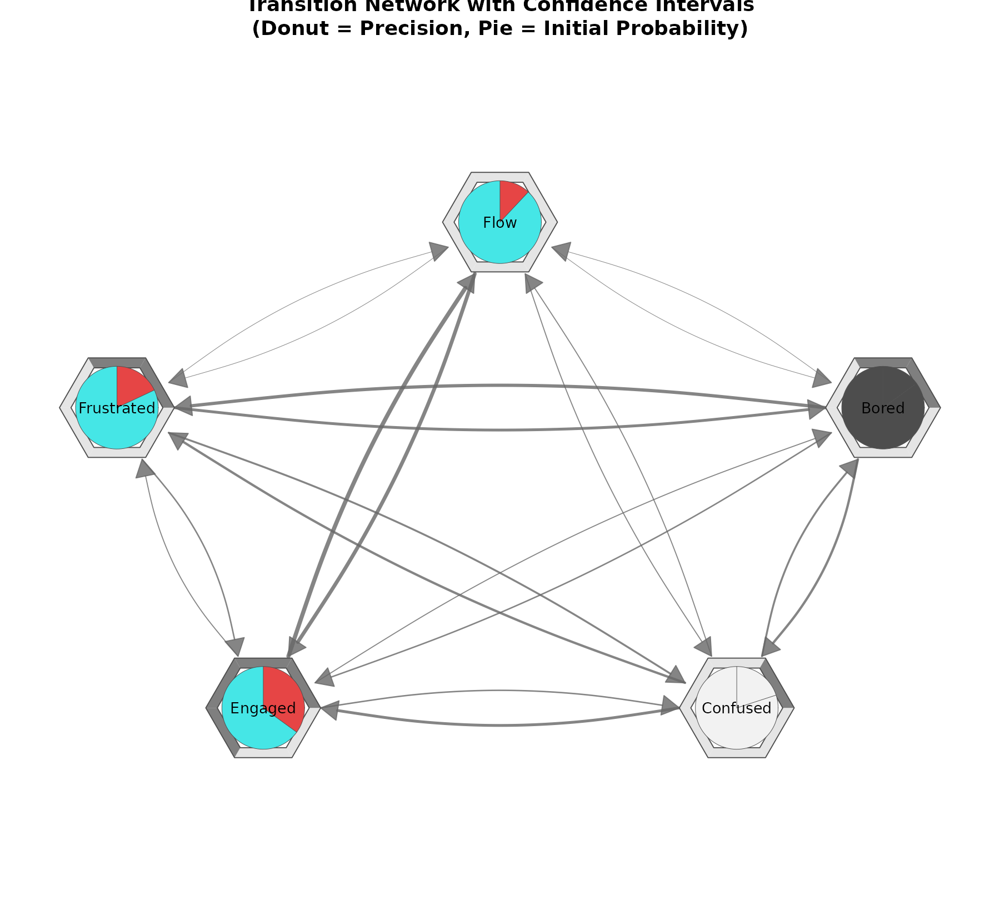
5.1 CI Legend Explanation
par(mfrow = c(1, 3), mar = c(3, 3, 3, 4))
# High precision node
splot(matrix(0, 1, 1),
layout = matrix(c(0, 0), 1, 2),
node_size = 12,
node_shape = "hexagon",
donut_fill = 0.95,
donut_color = "gray50",
pie_values = list(c(0.35, 0.65)),
pie_colors = c("gray30", "gray95"),
labels = "",
mar = rep(2,4),
title = "High Precision\n(Narrow CI)")
# Medium precision node
splot(matrix(0, 1, 1),
layout = matrix(c(0, 0), 1, 2),
node_size = 12,
node_shape = "hexagon",
donut_fill = 0.50,
donut_color = "gray50",
pie_values = list(c(0.20, 0.80)),
pie_colors = c("gray30", "gray95"),
labels = "",
mar = rep(2,4),
title = "Medium Precision\n(Moderate CI)")
# Low precision node
splot(matrix(0, 1, 1),
layout = matrix(c(0, 0), 1, 2),
node_size = 12,
node_shape = "hexagon",
donut_fill = 0.15,
donut_color = "gray50",
pie_values = list(c(0.12, 0.88)),
pie_colors = c("gray30", "gray95"),
labels = "",
mar = rep(2,4),
title = "Low Precision\n(Wide CI)")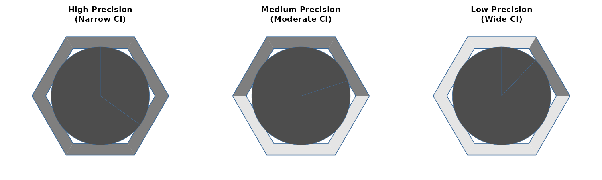
Session Info
## R version 4.5.3 (2026-03-11)
## Platform: x86_64-pc-linux-gnu
## Running under: Ubuntu 24.04.4 LTS
##
## Matrix products: default
## BLAS: /usr/lib/x86_64-linux-gnu/openblas-pthread/libblas.so.3
## LAPACK: /usr/lib/x86_64-linux-gnu/openblas-pthread/libopenblasp-r0.3.26.so; LAPACK version 3.12.0
##
## locale:
## [1] LC_CTYPE=C.UTF-8 LC_NUMERIC=C LC_TIME=C.UTF-8
## [4] LC_COLLATE=C.UTF-8 LC_MONETARY=C.UTF-8 LC_MESSAGES=C.UTF-8
## [7] LC_PAPER=C.UTF-8 LC_NAME=C LC_ADDRESS=C
## [10] LC_TELEPHONE=C LC_MEASUREMENT=C.UTF-8 LC_IDENTIFICATION=C
##
## time zone: UTC
## tzcode source: system (glibc)
##
## attached base packages:
## [1] stats graphics grDevices utils datasets methods base
##
## other attached packages:
## [1] cograph_2.0.0 tna_1.2.0
##
## loaded via a namespace (and not attached):
## [1] gtable_0.3.6 jsonlite_2.0.0 dplyr_1.2.0 compiler_4.5.3
## [5] tidyselect_1.2.1 jquerylib_0.1.4 systemfonts_1.3.2 scales_1.4.0
## [9] textshaping_1.0.5 yaml_2.3.12 fastmap_1.2.0 ggplot2_4.0.2
## [13] R6_2.6.1 labeling_0.4.3 generics_0.1.4 igraph_2.2.2
## [17] knitr_1.51 backports_1.5.0 htmlwidgets_1.6.4 checkmate_2.3.4
## [21] tibble_3.3.1 desc_1.4.3 bslib_0.10.0 pillar_1.11.1
## [25] RColorBrewer_1.1-3 rlang_1.1.7 cachem_1.1.0 xfun_0.57
## [29] fs_2.0.1 sass_0.4.10 S7_0.2.1 cli_3.6.5
## [33] withr_3.0.2 pkgdown_2.2.0 magrittr_2.0.4 digest_0.6.39
## [37] grid_4.5.3 lifecycle_1.0.5 vctrs_0.7.2 evaluate_1.0.5
## [41] glue_1.8.0 farver_2.1.2 ragg_1.5.2 rmarkdown_2.31
## [45] tools_4.5.3 pkgconfig_2.0.3 htmltools_0.5.9